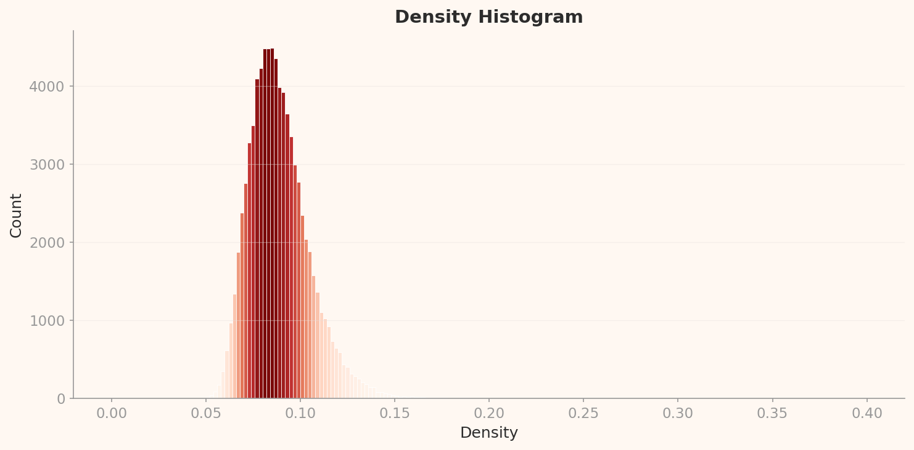
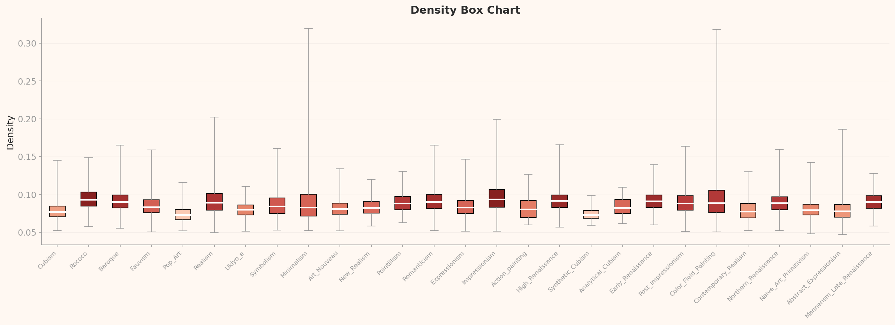

Evaluation Methodology
This report is an independent evaluation that reinterprets DataClinic's 3-level diagnostic results (Level I / II / III) through the ISO/IEC 5259-2:2024 Quality Measures (QM) framework. We mapped DataClinic's metrics, charts, and outliers to each ISO QM criterion and independently assigned Pass / Fail / Caution verdicts. In particular, we critically reinterpret discrepancies between DataClinic API descriptions and actual chart data.
Summary: We independently evaluated the WikiArt art movement image dataset (81,444 images, 27 classes) against ISO/IEC 5259-2:2024 Quality Measures (QM). After mapping DataClinic's 3-level diagnostic metrics and charts to ISO QM criteria, we found 5 Fail, 5 Caution, and 3 N/A out of 13 assessed items — with zero Pass. The key issues are a 133x imbalance between Impressionism and Analytical Cubism, a single-cloud structure in L2, the Blanchard effect (a single painter defining "typical art" in L3), and Pop Art's medium fault line. DataClinic's overall score of 53/100 (Poor) is confirmed from the ISO perspective as well.
1 Dataset Overview
Basic Information
| Dataset | WikiArt |
| Source | HuggingFace (huggan/wikiart) |
| Total Images | 81,471 (diagnosed: 81,444) |
| Classes | 27 (art movements) |
| Image Size | 750×597 ~ 1382×17768 px |
| DataClinic Score | 53 / 100 (Poor) |
Top 10 Classes by Sample Count (L1)
| Class (Movement) | Samples |
|---|---|
| Impressionism | 13,060 |
| Realism | 10,733 |
| Romanticism | 7,019 |
| Expressionism | 6,736 |
| Post_Impressionism | 6,450 |
| Art_Nouveau | 4,334 |
| Baroque | 4,241 |
| Symbolism | 3,421 |
| Abstract_Expressionism | 2,782 |
| Naive_Art | 2,405 |
| ... (17 movements omitted) | |
| Analytical_Cubism | 98 |
Max-to-min class ratio: 133 : 1 (Impressionism vs Analytical_Cubism)

▲ WikiArt dataset representative image collage — 27 art movements from Renaissance to Pop Art
WikiArt is a large-scale image dataset for art movement classification and one of the most widely used art AI benchmarks on HuggingFace. It spans 27 movements and approximately 81,000 works, from the Renaissance to contemporary art. However, the inherent disparities in the number of surviving works across historical periods, digitization bias, and Western-centric curation all affect its quality as an ML training dataset. DataClinic's overall score of 53 (Poor) reflects these structural issues.
2 ISO/IEC 5259-2 Evaluation Framework
This report independently applies the Quality Measures (QM) from ISO/IEC 5259-2:2024 to the WikiArt image dataset. We mapped DataClinic's 3-level diagnostic results to ISO QM criteria and independently interpreted and assigned verdicts for each item. Notably, this report critically identifies four discrepancies between DataClinic API text descriptions and actual chart data.
| DataClinic Level | What It Measures | Mapped ISO 5259-2 QMs |
|---|---|---|
| Level I | Class count, sample count, missing values, pixel statistics (RGB), resolution range | Com-ML, Bal-ML-1, Eft-ML-1 |
| Level II | Wolfram ImageIdentify Net V2 embeddings (1,280-dim) — general-purpose shape recognition | Sim-ML, Rep-ML-1, Div-ML-1, Con-ML-2 |
| Level III | BLIP image-text matching (56-dim) — semantic analysis | Rep-ML-3, Div-ML-2, Acc-ML-7 |
Intrinsic DQC
Completeness · Consistency
→ DataClinic Level I
AI/ML Additional DQC
Balance · Similarity · Representativeness · Diversity · Effectiveness · Accuracy
→ DataClinic Level II/III
Verdict Criteria
Fail Below threshold
Caution Requires further review
N/A Assessment deferred
3 Intrinsic Quality Assessment
| QM ID | Criterion | ISO Definition | Verdict |
|---|---|---|---|
| Com-ML-1 | Class Completeness | Whether the target domain's class taxonomy is sufficiently covered | Caution |
| Con-ML-2 | Pixel Channel Consistency | Statistical consistency of RGB channel distributions | Caution |
Com-ML-1 — Class Completeness: Caution
WikiArt covers 27 art movements, providing broad coverage of major Western art-historical periods. However, several rare movements have sample counts too low for ML training. Action Painting (98 images), Analytical Cubism (98), and Synthetic Cubism (120) fall far below the typical minimum training requirement of 300+ images for deep learning models. While all 27 movements are technically "present," some are effectively unlearnable, preventing a full Pass.
Con-ML-2 — Pixel Channel Consistency: Caution
The L1 pixel histogram (below) reveals dramatically different distributions across RGB channels. The Blue channel shows a pronounced left-skewed peak at 30-40, the Red channel exhibits a bimodal structure with a spike near 255, and the Green channel follows a relatively smooth mid-range distribution.
These distributions are art-historically explainable. The low Blue values originate from the brown grounds of traditional oil painting, while the Red 255 spike reflects cadmium red and vermillion pigments saturating in digital captures. Though artistically meaningful, this pattern signals the need for channel-specific normalization strategies in ML pipelines.

▲ L1 Pixel Histogram — Blue (left-skewed 30-40), Red (bimodal + 255 spike), Green (smooth mid-range). Dramatic cross-channel differences
Critical Reinterpretation D1: Challenging the "Consistent" RGB Claim
DataClinic API description: "RGB channels are consistent"
Actual chart data: The L1 pixel histogram above shows Blue (left-skewed at 30-40), Red (bimodal + 255 spike), and Green (smooth mid-range) — dramatically different distributions across channels.
For channels to be "consistent," they should exhibit similar statistical shapes, which is clearly not the case here.
While this discrepancy is explainable through paint chemistry, the API's "consistent" verdict is inaccurate.
4 Balance Assessment — Bal-ML
| QM ID | Criterion | Measurement | Verdict |
|---|---|---|---|
| Bal-ML-1 | Class Balance | 133x imbalance, stdDev(3,269) > mean(3,016) | Fail |
| Bal-ML-2 | Feature Space Balance | L3 period-based stratification (classical 1.84-1.87, modern 1.49-1.67) | N/A |
Bal-ML-1 — 133x Class Imbalance
ISO 5259-2's Bal-ML-1 measures the degree of balance in per-class sample counts. A max-to-min ratio exceeding 10:1 is generally considered severe imbalance. WikiArt's Impressionism (13,060 images) versus Analytical Cubism (98 images) yields a ratio of 133:1 — roughly 7x more severe than the SpectralWaste recycling dataset's 19.6:1.
The more structural problem is that the standard deviation (3,269) exceeds the mean (3,016). This means the concept of an "average class" is essentially meaningless. The dataset is bifurcated into a few large movements (Impressionism, Realism, Romanticism) and many small ones (Cubism variants, Minimalism).
This imbalance is art-historically inevitable. Impressionism was a mass movement spanning decades across Europe with thousands of participating artists, while Analytical Cubism was a short-lived experiment (1907-1912) led by just two artists — Picasso and Braque. Yet art-historical inevitability does not excuse ML training problems. A model trained on this data will overfit to Impressionism while barely learning Analytical Cubism at all.
Bal-ML-2 — Feature Space Balance: N/A (Deferred)
The L3 Box Chart shows stratification between classical movements (Baroque, Renaissance, etc.) with median values of 1.84-1.87 and modern movements (Pop Art, Minimalism, etc.) with medians of 1.49-1.67. This separation reflects genuine art-historical differences across periods. While it could be interpreted as "imbalance," it mirrors historical reality, so we defer judgment.
5 Distinguishability and Label Accuracy
| QM ID | Criterion | Measurement | Verdict |
|---|---|---|---|
| Eft-ML-1 | Distinguishability | L2 classes inseparable (single cloud) | Caution |
| Eft-ML-2 | Annotation Completeness | Metadata (artist, year) completeness not diagnosed | N/A |
| Acc-ML-7 | Label Accuracy | Dali → Abstract_Expressionism misclassification, Pop Art medium contamination | Fail |
Eft-ML-1 — Classes Inseparable in L2
ISO 5259-2's Eft-ML assesses whether each class in the dataset can be distinguished through learning. In the L2 general-purpose lens (Wolfram ImageIdentify Net V2, 1,280-dim), the PCA plot and contour map show all 27 classes forming a single connected cloud. No inter-class boundaries are visible, meaning the general-purpose shape recognition AI cannot visually distinguish between art movements.
DataClinic rated L2 Geometry as "Good," which contradicts the chart data (see Discrepancy D3 below).
Critical Reinterpretation D3: Geometry "Good" Is an Overestimate
DataClinic API: L2 Geometry = "Good"
Actual chart: Both the L2 PCA and contour plots show all 27 classes merged into a single cloud. Rating a dataset where no class separation exists as "Good" is an overestimate.
In a dataset with no class separation, supervised classifiers will perform severely below expectations.
From the ISO Eft-ML-1 perspective, this warrants a "Poor" rating.
Acc-ML-7 — Label Accuracy: Fail
Two types of labeling errors were observed.
1. Systematic movement misclassification: Salvador Dali's works are labeled as Abstract Expressionism. Dali is unambiguously classified as Surrealism in art history, distinct from Abstract Expressionism in period, geography, and technique. This suggests that such errors may be systematic rather than isolated.
2. Medium contamination: The Pop Art class contains not only traditional paintings but also photographs of installations, architectural photography, and other non-painting media. The implicit assumption that "art = painting" breaks down in the Pop Art genre, which cascades into the extreme separation observed in L3 analysis.
6 Similarity Assessment — Sim-ML
| QM ID | Criterion | Measurement | Verdict |
|---|---|---|---|
| Sim-ML-1 | Intra-class Similarity | Some classes (Cubism variants) show high cohesion, but full quantification unavailable | N/A |
| Sim-ML-2 | Cross-class Similarity | Minimalism ≈ Color_Field_Painting (same L2 cluster) | Caution |
Sim-ML-2 — Minimalism and Color Field Painting Merge
Sim-ML-2 measures cases where samples from different classes cluster too closely in embedding space. In the L2 analysis, Minimalism and Color Field Painting occupy nearly identical positions. These two movements are closely related in art history as well — both emerged in 1960s New York and share a focus on color planes and geometric simplicity — so the general-purpose AI's inability to separate them is somewhat expected.
From an ML standpoint, however, keeping these as separate classes means the classifier will fail to learn the boundary. Class merging or hierarchical labeling (e.g., Minimalism → "Geometric Abstraction" parent category) should be considered.

▲ L2 Contour — Two density centers within a single continuous mass. All 27 classes remain unseparated in one cloud
Critical Reinterpretation D2: Cluster Count Overstated
DataClinic API: "3 high-density clusters"
Actual chart: The L2 contour shows a single connected mass with 2 density centers. Describing this as "3 separate clusters" is an overstatement.
Separated clusters and density variations within a single mass have entirely different implications for ML.

▲ L2 PCA — All 27 classes overlap in a single cloud. No class separation achieved

▲ L2 Density Histogram — Overall density distribution
7 Representativeness Assessment — Rep-ML
| QM ID | Criterion | ISO Definition | Verdict |
|---|---|---|---|
| Rep-ML-1 | L2 Representativeness | Whether the feature-space core represents the full domain | Fail |
| Rep-ML-3 | L3 Representativeness | Whether "typical" samples in semantic space represent the domain | Fail |
Rep-ML-1 — L2 Feature Space: Minimalism/Color Field Bias
The core of the L2 general-purpose lens's feature space (high-density region) is dominated by Minimalism and Color Field Painting. These two movements feature visually simple compositions (monochrome canvases, geometric forms) that the general-purpose shape recognition AI interprets as "the most universal visual patterns."
As a result, the rich visual diversity of 27 movements — Baroque's dramatic chiaroscuro, Ukiyo-e's woodblock textures, Expressionism's distorted forms — is inadequately represented in the feature space. This reflects both the limitations of the general-purpose lens and the dataset's representativeness deficit.

▲ L2 Box Chart — Per-class density distributions. Minimalism/Color_Field_Painting high-density concentration confirmed
The Antoine Blanchard Effect
Core evidence for Rep-ML-3 Fail: Of the top 12 high-density samples in L3 (BLIP image-text matching), 7 are Parisian boulevard scenes by Antoine Blanchard, with the remaining 4 being Impressionist cityscapes by Pissarro and similar artists.
Blanchard was a 19th-century commercial painter who repeatedly depicted Parisian scenes — the Champs-Elysees, Place de la Madeleine, and streets in front of the Opera Garnier. Because his works are over-represented in WikiArt, the BLIP lens's definition of "typical art" converges on "a rainy Parisian evening street scene under gaslight."
This is where collection bias (over-collection of one artist's repetitive commercial works) and lens characteristics (BLIP's semantic matching assigns high consistency scores to representational cityscapes) intersect. If a single artist's commercial repetitions define the "core" of an 81,000-image dataset, that dataset cannot claim to represent the diversity of art.

▲ L3 PCA — BLIP semantic space. Dramatic Pop Art separation + period-based stratification

▲ L3 Density Histogram — Density distribution under the BLIP lens
8 Diversity Assessment — Div-ML
| QM ID | Criterion | Verdict |
|---|---|---|
| Div-ML-1 | L2 Diversity — All 27 classes form a single continuous cloud in L2 | Fail |
| Div-ML-2 | L3 Diversity — Dramatic Pop Art separation, period-based stratification present | Caution |
Div-ML-1 — Diversity Failure in L2
ISO 5259-2's Div-ML-1 measures the effective dimensionality and distributional diversity of features. The fact that all 27 art movements collapse into a single continuous cloud under the L2 general-purpose lens means that, from this lens's perspective, "art movement diversity" does not exist in the data.
Wolfram ImageIdentify Net was trained for everyday object classification. To this model, all paintings are essentially one category: "image." The differences between movements — brushwork, palette, composition — register only as minuscule variations in the 1,280-dimensional space, insufficient for class separation.

▲ L3 Contour — Unlike L2, the BLIP lens reveals structure: dramatic Pop Art separation + period-based stratification
Critical Reinterpretation D4: L3 Clusters "Unclear" Is an Underestimate
DataClinic API: "Cluster distinction still unclear"
Actual chart: The L3 Box Chart (below) shows Pop Art's dramatic separation (median ~1.50 vs. others at 1.70-1.90) and
clear period-based stratification between classical and modern movements.
The "unclear" assessment underestimates the actual structure visible in the L3 charts.
The Pop Art Fault Line
In the L3 Box Chart, Pop Art's median density sits at approximately 1.50, dramatically separated from the remaining 26 movements (medians 1.70-1.90). The root cause is a fundamental difference in medium.
Examining the low-density (outlier) samples in the Pop Art class reveals not traditional paintings but installation photographs, architectural photography, and collages. Since the BLIP lens performs image-text semantic matching, it recognizes "oil on canvas" and "photograph of a gallery installation" as entirely different categories.
WikiArt's implicit assumption that "art = painting" breaks down at Pop Art. Pop Art extends beyond painting to encompass printmaking, silkscreen, installation, and collage. This medium diversity is what surfaces as a "fault line" in L3. The issue is not one of movement diversity but of medium diversity.

▲ L3 Box Chart — Key chart. Pop Art dramatic separation (median ~1.50) + classical movements (Baroque, Renaissance: 1.84-1.87) vs modern movements (Minimalism, Color_Field: 1.49-1.67) period-based stratification
9 Two Lenses Compared: L2 vs L3
The most compelling finding from WikiArt is that the two lenses tell entirely different stories. L2 (general-purpose shape recognition) says "all paintings look alike," while L3 (semantic matching) says "they separate clearly by period and medium." The comparison card below presents both perspectives side by side.
| Dimension | L2 Findings (General Shape AI) | L3 Findings (Semantic AI) |
|---|---|---|
| High-density Core | Minimalism / Color_Field_Painting Visual simplicity interpreted as "universal pattern" |
Antoine Blanchard's Parisian boulevards Semantically consistent representational cityscapes |
| Low-density Outliers | Degas portraits, Ukiyo-e prints, Mabe abstracts "Unusual" visual patterns for general lens |
Pop Art installation photos, contemporary architecture Non-painting media → semantic space outliers |
| Cluster Structure | Single cloud (no class separation) All paintings converge to one "image" category |
Dramatic Pop Art separation + period stratification Semantic lens distinguishes period and medium |
| ISO Implications | Div-ML-1 Fail, Eft-ML-1 Caution General-purpose lens cannot classify art movements |
Rep-ML-3 Fail, Div-ML-2 Caution Semantic lens finds structure but reveals representation bias |
Key takeaway: Lens selection fundamentally shapes data quality assessment outcomes. Relying only on the L2 general-purpose lens would lead to the conclusion that "art movement classification is impossible" — missing the period-based structure that L3 reveals. Conversely, looking only at L3 would overlook the dataset's failure in general-purpose AI applications. This reinforces the necessity of multi-lens analysis in ISO 5259-2 evaluations.
10 Overall Assessment and Recommendations
| DQC Group | QM ID | Criterion | Verdict | Severity |
|---|---|---|---|---|
| Balance | Bal-ML-1 | Class Balance (133x) | Fail | Critical |
| Representativeness | Rep-ML-1 | L2 Minimalism bias | Fail | Critical |
| Representativeness | Rep-ML-3 | L3 Blanchard effect | Fail | High |
| Diversity | Div-ML-1 | L2 single cloud | Fail | Critical |
| Accuracy | Acc-ML-7 | Dali misclassification, Pop Art medium contamination | Fail | High |
| Completeness | Com-ML-1 | Rare movements: 98-120 samples | Caution | Medium |
| Distinguishability | Eft-ML-1 | L2 classes inseparable | Caution | Medium |
| Similarity | Sim-ML-2 | Minimalism ≈ Color_Field | Caution | Medium |
| Diversity | Div-ML-2 | Pop Art medium fault line | Caution | Medium |
| Consistency | Con-ML-2 | RGB channel discrepancy | Caution | Medium |
| Similarity | Sim-ML-1 | Intra-class quantification unavailable | N/A | — |
| Distinguishability | Eft-ML-2 | Metadata completeness not diagnosed | N/A | — |
| Balance | Bal-ML-2 | Period-based stratification (historical reality) | N/A | — |
Immediate Actions
- Bal-ML-1: Augment rare movements (Analytical_Cubism, Action_Painting, etc.) to 300+ samples
- Acc-ML-7: Full label audit. Correct systematic errors such as Dali → Surrealism
- Div-ML-1: Redesign class taxonomy — evaluate merging or hierarchical restructuring of 27 movements
Medium-term Improvements
- Rep-ML-1/3: Adjust overrepresentation of commercial repetitions (e.g., Blanchard) via downsampling or weighting
- Div-ML-2: Split Pop Art class into "painting" and "non-painting (installation/photography)" subclasses
- Sim-ML-2: Merge Minimalism & Color_Field_Painting or introduce hierarchical labeling
Monitoring
- Con-ML-2: Develop RGB channel normalization strategies (painting-domain-specific)
- Eft-ML-1: Evaluate domain-specific lens-based classification pipelines
- Com-ML-1: Consider expansion to non-Western movements (East Asian painting, Islamic miniatures, etc.)
What DataClinic's Score of 53 Means
DataClinic's overall score of 53/100 (Poor) aligns with this report's independent ISO 5259-2 assessment. 5 Fail + 5 Caution items with zero Pass confirms that WikiArt has serious structural quality issues for its intended purpose of "art movement classification." However, this dataset is simultaneously a rich art resource of 80,000+ images. Applying the recommendations above in stages can restore its value as an ML benchmark.
Critical Reinterpretation Summary: DataClinic API vs Actual Charts
| # | DataClinic API Claim | Actual Chart Data | ISO Verdict Impact |
|---|---|---|---|
| D1 | "RGB channels consistent" | Blue left-skewed, Red bimodal + 255 spike | Con-ML-2 upgraded to Caution |
| D2 | "3 high-density clusters" | 1 connected mass with 2 density centers | Div-ML-1 Fail maintained |
| D3 | L2 Geometry "Good" | 27 classes in single cloud, no separation | Eft-ML-1 Caution |
| D4 | L3 clusters "unclear" | Dramatic Pop Art separation + period stratification clearly visible | Div-ML-2 Caution (underestimate corrected) |
References
- [1] ISO/IEC JTC 1/SC 42. (2024). ISO/IEC 5259-2:2024 — Part 2: Data quality measures.
- [2] DataClinic Report #115 — WikiArt. dataclinic.ai/en/report/115
- [3] WikiArt Dataset (huggan/wikiart). HuggingFace
- [4] Pebblous. (2025). AI Data Quality Standards and Pebblous DataClinic: ISO/IEC 5259-2 Quantitative Mapping
- [5] Pebblous. (2026). SpectralWaste ISO/IEC 5259-2 Independent Evaluation Report